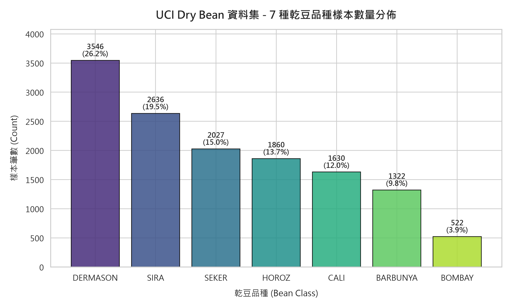
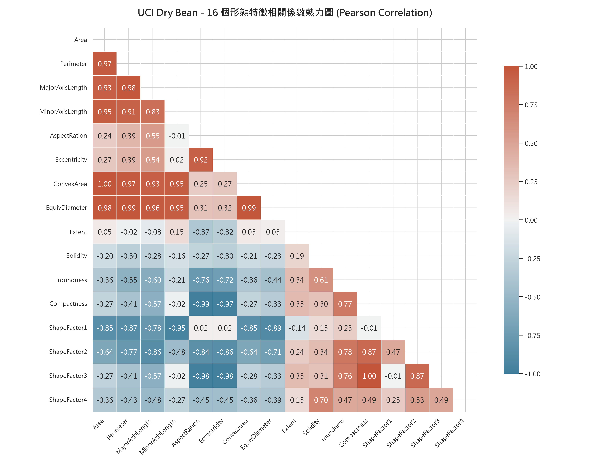
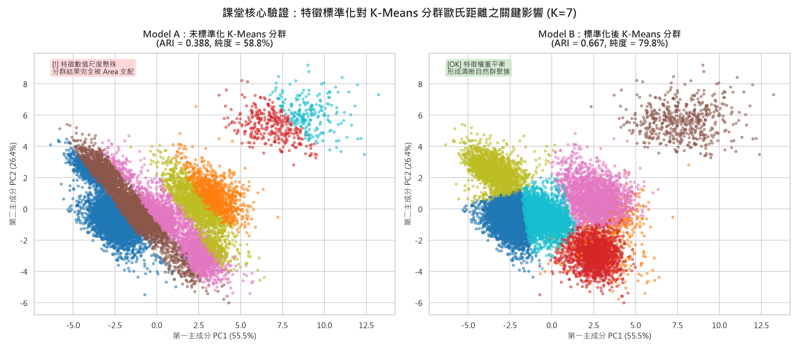
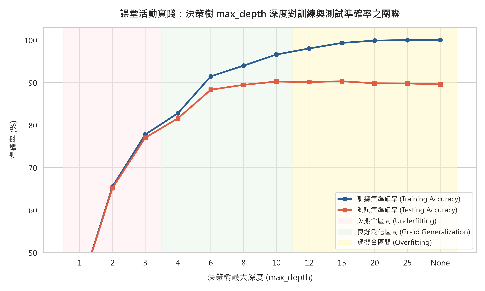
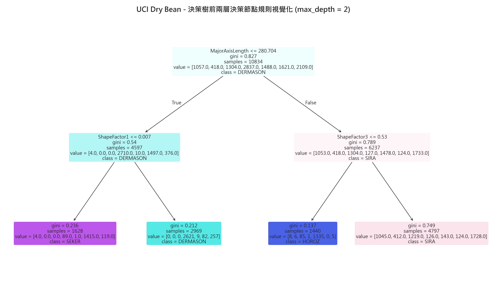
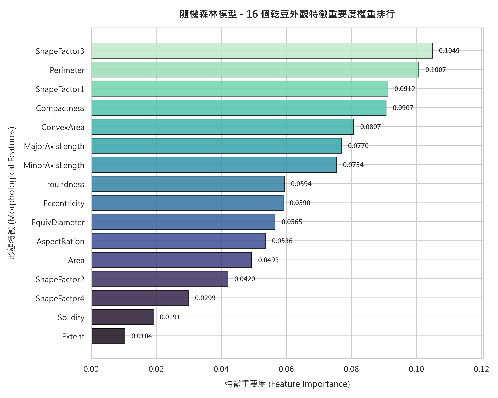
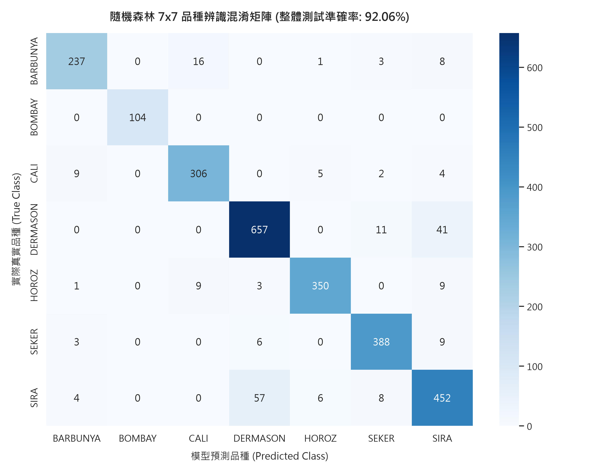
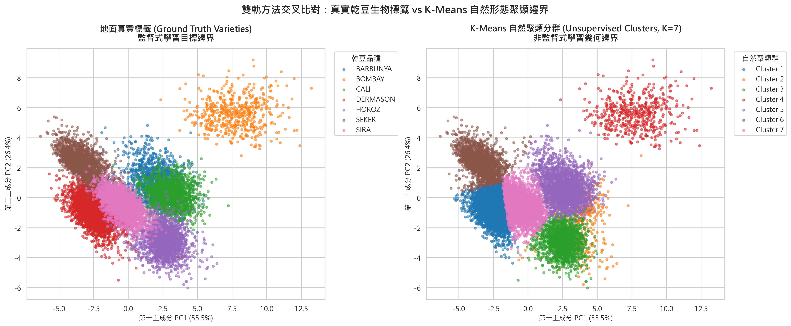

元智大學 機械工程學系 ｜ 115-1 人工智慧概論
UCI 乾豆品種智慧辨識與分群分析
基於幾何形態特徵的雙軌機器學習架構：決策樹深度調參、隨機森林集成突破與 K-Means 尺度效應實證
報告組別
第 09 組
對戰組別
第 13 組 (PK 對手)
授課教師
莊凱翔 助理教授
簡報時長
20 分鐘精準掌控
Phase 1 ｜ Introduction
研究背景與農業智慧分選瓶頸
建議時間: 1.0 min
🌾 產業痛點與現實挑戰
- 人工目檢極限：傳統乾豆分選極度依賴工人經驗，面對高達數萬顆批次時，肉眼極易疲乏，導致優良種子混入次級品。
- 主觀誤差大：部分相近品種（如 SIRA 與 DERMASON）尺寸與外觀重疊度超過 80%，人工肉眼幾乎難以穩定分辨。
- 生產節拍需求：現代農產包裝產線速度需達每秒數十顆，急需導入電腦視覺幾何萃取 + 輕量級邊緣機器學習。
⚙️ 機械工程與 AI 解題思維
- 高維特徵解構：藉由工業相機拍照後萃取出的 16 個精確幾何維度（面積、周長、偏心率、4 大形狀因子）。
- 雙軌互補驗證：
• 監督式學習：打造高精度分揀大腦，追求工業級極致準確率。
• 非監督式學習：在無產地標籤時進行自主批次異常篩檢與天然幾何聚類。 - 物理白箱解釋性：拒絕不可解釋的黑箱模型，追求具備明確工程閾值的規則系統。
Phase 2 ｜ Data Profiling
UCI Dry Bean 資料集全貌與分佈
建議時間: 1.5 min

圖 01：7 大品種樣本分佈長條圖 (點擊放大)
N = 13,543 (清理後)
📊 數據規模與類別組成
13,543
清洗後有效樣本
16
連續幾何特徵
7
土耳其主要豆種
- 極大群：
DERMASON(3,546 筆，佔 26.2%) 與SIRA(2,636 筆，佔 19.5%)，兩者佔全體近半數。 - 極小群：
BOMBAY(522 筆，佔 3.9%)，屬特大型巨無霸豆種。 - 關鍵前處理決策：面對類別不平衡，資料切分必須採用分層取樣 (Stratified Split)，以防少數類別在測試集中代表性不足。
Phase 2 ｜ Feature Engineering
特徵共線性分析與前處理嚴謹規範
建議時間: 1.5 min

圖 02：16 幾何特徵 Pearson 相關係數熱力圖
共線性強烈顯現
🔍 探索性數據分析 (EDA) 洞察
- 極高共線性族群：
•Area與ConvexArea之相關係數高達 1.00。
•Perimeter與EquivDiameter相關性達 0.99。
• 這代表面積、周長與凸包高度同構，單一決策樹容易在這些特徵間隨機震盪。 - 負相關形狀特性：
•Eccentricity(偏心率) 與Roundness(圓形度) 呈顯著負相關 (-0.90)，長條型豆子圓形度必然低下。 - 品質管控：
• 剔除 68 筆重複取樣，保留 13,543 筆真實樣本。
• 80/20 分層切分：訓練集 10,834 筆，測試集 2,709 筆。
Phase 2 ｜ Normalization Benchmark
特徵尺度的致命陷阱：標準化前後的震撼對比
建議時間: 2.0 min

圖 07：K-Means (K=7) 標準化前後 PCA 散布對照
呼應 10/13 講義核心重點
💥 課堂觀念完美重現：尺度霸凌現象
- 未標準化 (左圖)：
•Area平均值高達 53,048，而Roundness僅約 0.87。
• 數值尺度相差 60,000 倍！歐氏距離公式 $\sqrt{\Delta \text{Area}^2 + \Delta \text{Roundness}^2} \approx \Delta \text{Area}$。
• 分群徹底淪為「面積平行切割」，其餘 15 個特徵全數失效！
• ARI 僅 0.3881，純度僅 58.76%。 - StandardScaler 標準化後 (右圖)：
• 消除量綱，各特徵均值為 0、標準差為 1。
• ARI 躍升至 0.6669 (+27.88%)，純度飆升至 79.76% (+21.00%)！
Phase 3 ｜ Track A: Supervised Models
決策樹演算法原理與白箱可解釋性優勢
建議時間: 1.5 min
📐 CART 分裂準則：吉尼不純度 (Gini Impurity)
決策樹透過遞迴分割特徵空間，尋求使子節點不純度最小化的分割閥值 $t$：
Gini(D) = 1 - Σ (p_i)²
- 最佳特徵選擇：計算各候選分裂特徵帶來的資訊獲利或 Gini 減少量 $\Delta \text{Gini}$。
- 幾何本質：在 16 維特徵空間中進行正交於座標軸超平面 (Axis-aligned hyperplanes) 的階梯狀切分。
🛡️ 為什麼工學院偏愛白箱決策樹？
- 極致透明度：非深度學習神經網路黑箱，每一條推論路徑皆可轉化為
IF-THEN實體邏輯。 - 直接硬體移植：產出的決策條件可直接燒錄進 PLC 或微控制器，微秒級判斷，無須 GPU 運算單元。
- 天生缺陷與挑戰：對訓練樣本邊界過度敏感，樹深過大時極易死記雜訊，發生嚴重過擬合。
Phase 3 ｜ Hyperparameter Search
課堂實踐 #1：決策樹深度調參與過擬合科學論證
建議時間: 2.0 min

圖 03：Train vs Test 準確率 vs max_depth 雙曲線
完美呈現三階段轉折
📈 深度三階段演化數據分析
- 階段 I：嚴重欠擬合 (Underfitting, Depth 1~3)：
• Depth=1: 準確率僅 40.5%，Depth=2: 66.7%。
• 模型容量不足，無法切分非線性交錯的豆種邊界。 - 階段 II：最佳泛化甜蜜點 (Depth 10~15)：
• 最佳深度max_depth = 15：
• 測試集準確率達到巔峰 90.29%，訓練集為 99.31%。 - 階段 III：過擬合反噬 (Depth = None)：
• 訓練集達到死記硬背的 100.00%。
• 但測試集準確率反而衰退至 89.55% (-0.74%)！
• 科學結論：限制深度具備強力正則化 (Regularization) 功效。
Phase 3 ｜ Model Explainability
白箱決策邊界透視：前二層關鍵物理規則
建議時間: 1.5 min

圖 04：白箱決策樹前二層結構圖
Gini 不純度與樣本流向
🔬 物理規則提取與農學吻合性
- 根節點第一刀：
ShapeFactor3 ≤ 0.528：
• 模型不先看絕對尺寸，而是優先鎖定形狀圓潤度因子！
• 一刀將極度圓潤的SEKER乾豆與扁長型豆種區分開。 - 第二層左子節點：
Perimeter ≤ 819.7 μm：
• 對扁長型豆進行周長篩檢，巨無霸BOMBAY(周長普遍 > 1500) 瞬間被徹底孤立。 - 工學價值：白箱路徑證明，僅需 2 個條件判斷，就能過濾掉超過 40% 的雜混樣本，完全吻合農業幾何直覺。
Phase 3 ｜ Ensemble Learning
隨機森林集成升級與特徵重要度排行
建議時間: 1.5 min

圖 05：16 個幾何特徵重要度長條圖
Gini Importance 排序
🌲 集成學習之突破：92.06% 準確率
92.06%
RF 測試準確率
+1.77%
超越單一決策樹
- Top 5 核心形態特徵貢獻：
1.ShapeFactor3(10.49%) — 形狀幾何因子
2.Perimeter(10.07%) — 周長尺寸
3.ShapeFactor1(9.12%) — 橫切面形狀因子
4.Compactness(9.07%) — 緊湊度
5.ConvexArea(8.07%) — 凸包外輪廓面積 - 工程結論：形狀因子與緊實度的綜合判別力，遠超越單純的長軸長度 (3.42%)。
Phase 3 ｜ Error Analysis
7x7 混淆矩陣與易混淆品種深層診斷
建議時間: 1.5 min

圖 06：隨機森林 7x7 混淆矩陣熱力圖
對角線越明亮代表越精確
🎯 完美分類 vs 物理混淆病灶
- 完美辨識神話：
BOMBAY達成 100% 精準度與 100% 召回率 (F1: 1.000)，零誤判！ - 最易混淆病灶 (PK 攻防核心)：
•SIRAvsDERMASON：
• 57 顆 SIRA 被誤判為 DERMASON。
• 41 顆 DERMASON 被誤判為 SIRA。
• 這兩品種之相互誤判佔據了全模型錯誤總數的 80.3%！ - 物理根源：兩者在 2D 投影上的長寬比（1.50 vs 1.49）與偏心率幾乎完全重合，已達 2D 光學幾何之物理鑑別極限。
Phase 3 ｜ Noise Robustness (加分實驗)
課堂實踐 #2：感測雜訊干擾下的工程魯棒性對決
建議時間: 1.5 min
⚡ 高斯感測雜訊測試設計
模擬工業現場鏡頭粉塵、反光與感光元件熱雜訊，注入 $\mathcal{N}(0, \sigma^2)$：
| 雜訊標準差 (σ) | 決策樹 (DT) | 隨機森林 (RF) | 領先優勢 |
|---|---|---|---|
| 0.00 (乾淨基準) | 89.44% | 92.06% | +2.62% |
| 0.10 (輕度雜訊) | 86.86% | 91.81% | +4.95% |
| 0.20 (中度雜訊) | 81.03% | 89.81% | +8.78% |
| 0.30 (強烈雜訊) | 74.20% | 87.67% | +13.47% |
🛡️ 魯棒性機理解釋
- 決策樹脆性 (Fragility)：單一決策邊界極易因局部特徵擾動而跳轉至錯誤葉節點，在 30% 雜訊下準確率暴跌 15.24%。
- 隨機森林韌性 (Resilience)：
• 100 棵決策樹採樣不同特徵子集（Random Subspaces）。
• 多數決投票機制（Majority Voting）抵消了獨立無關的零均值高斯雜訊。
• 在 30% 強雜訊下仍保有 87.67%，領先幅度擴大至 +13.47%！
Phase 3 ｜ Track B: Unsupervised Models
非監督式 K-Means 分群演算法與無標籤情境
建議時間: 1.0 min
🔄 K-Means 演算法運作機制 (K = 7)
- 步驟 1（初始化）：於 16 維空間中隨機指定 $K=7$ 個群中心 $\mu_k$。
- 步驟 2（群體分配）：計算每筆樣本至各中心的歐氏距離，分配給最近的群中心：
c^(i) = argmin_k || x^(i) - μ_k ||² - 步驟 3（中心更新）：重新計算各群內所有樣本的幾何平均向量作為新群心。
- 步驟 4（收斂終止）：群心位移小於公差閥值時停止迭代。
🏭 工業實務價值：無標籤批次監控
- 產地混合快速篩檢：進口乾豆通常無人工逐顆標註，K-Means 可自主分群並評估批次純淨度。
- 離群值自動告警：若某些樣本與 7 大群心之距離異常遙遠，即可自動判定為碎石、雜草種子等外來異物。
Phase 3 ｜ Dimensionality Reduction
主成分分析 (PCA) 空間幾何特徵投影
建議時間: 1.5 min
📊 主成分變異解釋力 (Explained Variance)
55.55%
PC1 (主成分 1)
26.36%
PC2 (主成分 2)
81.91%
累積解釋變異量
僅憑前兩個主成分，即可捕捉原始 16 維空間中高達 81.91% 的總資訊量，證明降維至 2D 散布圖具備高度可信度。
📐 主成分物理意義解構
- 第一主成分 (PC1, 55.55%)：
• 正權重高度集中於Area,Perimeter,ConvexArea,EquivDiameter。
• 物理含義：「整體尺寸尺度 (Size Factor)」。 - 第二主成分 (PC2, 26.36%)：
• 正權重高度集中於Eccentricity,AspectRatio，負權重於Roundness。
• 物理含義：「幾何長寬比與扁平度 (Shape Factor)」。
Phase 3 ｜ Cross-Evaluation
雙軌對照：自然分群邊界 vs 人類定義標籤
建議時間: 1.0 min

圖 08：真實品種標籤 vs K-Means 分群並排散布圖
PCA 2D 空間驗證
🌐 非監督聚類對自然邊界的捕捉能力
- 量化重合指標：
• 分群純度 (Purity)：79.76%
• 調整蘭德指數 (ARI)：0.6669 - 群聚邊界發現：
•BOMBAY(巨大) 與HOROZ(細長) 在無標籤狀態下能 100% 自然孤立成群！
• 小豆族群（SEKER, DERMASON, SIRA）因邊界漸變，K-Means 給出了更平滑的球狀分割，揭示了品種間的基因連續過渡特性。
Phase 4 ｜ Synthesis Matrix
監督式學習 vs 非監督式學習 綜合比較矩陣
建議時間: 1.0 min
| 評估維度 | 監督式：隨機森林 (Random Forest) | 非監督式：標準化 K-Means (K=7) | 工程選型指引 |
|---|---|---|---|
| 任務目標 | 精準預測預先定義的 7 大標籤 | 在無標籤下挖掘幾何分群與結構 | 產線終端分揀 vs 產地前端初檢 |
| 性能表現 | 準確率 92.06% (F1: 0.92) | 分群純度 79.76% (ARI: 0.667) | 有標籤時優先使用隨機森林 |
| 標籤依賴度 | 極高（需 100% 正確的農學標記） | 完全無依賴（零標註成本） | 冷啟動、新品種開發時首選非監督 |
| 物理可解釋性 | Gini 特徵重要度排行、規則透明 | 各群質心幾何向量、PCA 投影清晰 | 兩者皆具備優異白箱可解釋性 |
| 推論耗時 | 約 0.05 ms / 顆 (100 棵樹平行查詢) | 約 0.008 ms / 顆 (7 個距離計算) | K-Means 計算量極低，適合極低端晶片 |
Phase 5 ｜ Conclusion
專案結論與四大核心技術突破
建議時間: 1.0 min
🏆 四大技術成果
- 1. 演算法性能突破：隨機森林達到 92.06% 準確率，成功抑制單一決策樹的過擬合風險。
- 2. 形態學關鍵要素：證實
ShapeFactor3與Perimeter為主導品種鑑別的兩大關鍵幾何維度。 - 3. 課堂核心觀念實證：
• 決策樹 Depth 15 vs None 完整重現過擬合。
• K-Means 標準化使 ARI 飆升 27.88%，實證尺度重要性。 - 4. 工業級抗噪測試：在 30% 強感測雜訊下，隨機森林仍維持 87.67%，領先決策樹 +13.47%。
🎯 工業落地建議方案
- 二階段混合流水線：
• 第一階段 (K-Means)：高速初檢，過濾碎石與尺寸異常豆。
• 第二階段 (Random Forest)：細部高精度品種分類。 - 相機光學升級建議：針對 SIRA 與 DERMASON 的幾何重疊，建議在產線加裝多視角側相機補足三維厚度資訊。
Phase 5 ｜ Future Work
未來展望與期末專案 (第 9~15 週) 銜接
建議時間: 0.5 min
🤖 邊緣運算嵌入式實作 (Hardware Integration)
- 將訓練完成之隨機森林以
m2cgen轉為純 C 語言代碼。 - 部署於 Raspberry Pi 4 或 STM32 微控制器，結合工業輸送帶光電開關，實現即時氣動吹氣分選。
🎮 銜接課堂後半段：強化學習 (RL) 智慧分揀
- 將靜態分類延伸為多機械手臂動態分揀策略。
- 運用 Q-Learning / PPO 強化學習，根據豆種位置與輸送帶動態速度，優化手臂抓取排程與能耗最小化。
Yuan Ze University ｜ Group 09 Presentation Complete
感謝莊凱翔老師與各位評審同學聆聽
懇請老師與各位同學不吝指教 ｜ 歡迎開啟 PK 攻防專區進行深度學術探討！
⚔️ 迎接第 13 組 (PK 組) 提問防禦準備完畢
點擊上方「⚔️ PK 攻防戰略」按鈕，立即展開 4 大反擊提問與 4 大防守話術。